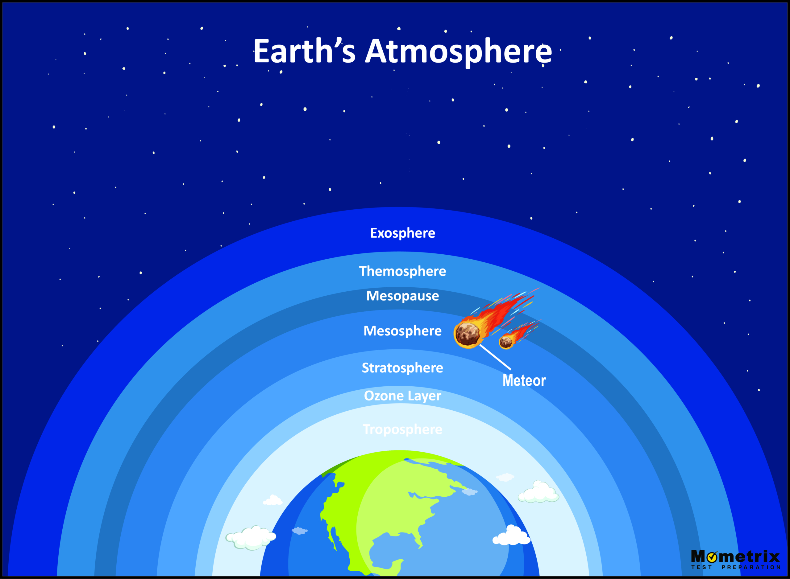
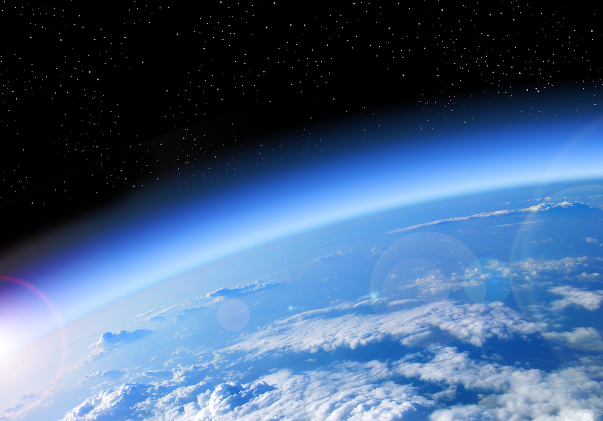

Atmosphere
The atmosphere is a layer of gas that surrounds the Earth and is held in place by the Earth's gravity. It is divided into four main layers based on its composition, temperature, and other physical properties: the troposphere, stratosphere, mesosphere, and thermosphere. The troposphere is the lowest layer of the atmosphere and extends from the earth's surface up to 8-15 kilometers (5-9 miles). The stratosphere contains the ozone layer which absorbs ultraviolet radiation from the sun and increases with altitude. The mesosphere extends up to 85 kilometers (53 miles) and is characterized by low temperatures.
The thermosphet is the layer above the mesosphere and extending up to 600 kilometers (372 miles). It contains the ionosphere, ionization of gases, aurora borealis, and aurora australis. The atmosphere plays a crucial role in supporting life on Earth by absorbing and reflecting solar radiation, as well as protecting the Earth from harmful solar radiation and meteoroids.


Learning about the atmosphere is crucial for several reasons. It helps us understand weather patterns, climate change, air quality, and space exploration. By studying the atmosphere, we can make more accurate weather forecasts, develop strategies to mitigate the effects of climate change, monitor and control air pollution, and explore space. Overall, understanding the atmosphere is essential for a range of scientific and practical applications.